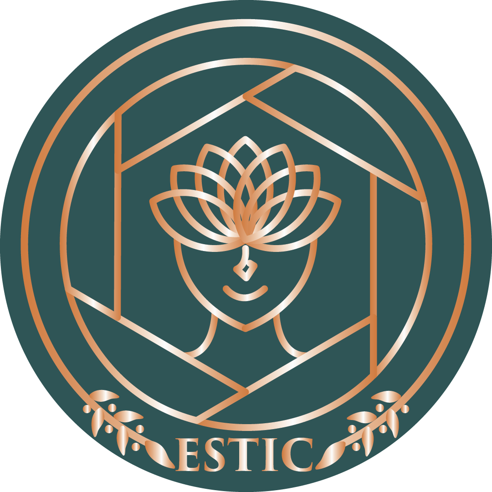

OBSCURA EXHIBITION 2021
BY OBSCURA GEN XIV

@OBSCURA.EXHIBITION

obscuraexhi@gmail.com
MEDIA PARTNER :


Apa itu Estic? Estic yang berarti ‘Aku’ dalam bahasa Catalan. Estic ini adalah acara pameran fotografi yang dikoordinasikan oleh UKM Obscura dari Universitas Multimedia Nusantara. Kegiatan ini dilaksanakan pada tanggal 4 April-8 Mei 2021. Situasi pandemi Covid-19 membuat kami tidak dapat berkumpul bersama untuk melaksanakan acara ini secara tatap muka, sehingga kami harus menyelenggarakannya secara daring atau online.
Mungkin kalian penasaran dengan nama Estic dan apa tujuan dari Estic. Kami memilih tema Estic karena kami ingin membawa peserta melalui pameran fotografi ini untuk melihat dirinya sebagai pribadi yang sedang berkembang sehingga tidak perlu merasa malu dan insecure pada dirinya. Kami menggunakan bunga sebagai representasi visual dari Estic karena kami melihat bahwa kita semua dapat diibaratkan sebagai bunga yang masih berbentuk bibit, merasa buruk pada diri sendiri, padahal masih banyak hal yang masih bisa kita telusuri dan banyak waktu agar kita berkembang. Saat kita berhasil melawan ketidakpercayaan pada diri sendiri dan memilih untuk selalu berkembang, maka kita akan berkembang menjadi sebuah bunga indah yang percaya pada keindahannya dan dikagumi orang-orang.
Hal yang membuat Estic berbeda dengan acara Obscura Exhibition yang telah dilaksanakan di tahun-tahun sebelumnya yaitu Estic mengadakan dua kategori lomba, yaitu kamera profesional dan kamera handphone. Hal ini dilakukan agar para pengguna handphone tetap dapat mengikuti lomba ini secara adil dan mengembangkan bakatnya.
Panitia Estic terdiri dari 43 orang yang terbagi ke dalam 8 divisi besar. Divisi-divisi tersebut yaitu BPH, Acara, Perlengkapan, Dokumentasi, Publikasi dan Visual, Dana, Keamanan, dan Media Partner & Sponsorship. Meskipun dengan latar belakang yang berbeda-beda, kami saling bekerja sama untuk mensukseskan acara ini. Dibantu oleh BPH Obscura Gen 13 yang bertindak sebagai supervisi acara Estic, kami saling menuangkan ide agar Estic dapat berjalan lancar dan sesuai dengan yang diharapkan.
Estic terdiri dari acara pre-event dan event. Pada acara pre-event, Estic akan membagikan pengetahuan di dunia fotografi dengan mengadakan workshop serta webinar dengan menghadirkan narasumber berpengalaman. Selain itu, perlombaan fotografi juga menjadi acara utama untuk acara kali ini. Foto-foto yang dikumpulkan akan dipamerkan ke dalam pameran Estic pada tanggal 16-21 April 2021 secara online, serta pengunjung bisa melakukan voting terhadap foto yang mereka sukai.
Tidak kalah seru untuk puncak acara event yang akan dilaksanakan pada tanggal 8 Mei 2021 akan ada pengumuman pemenang dan yang ditunggu-tunggu penampilan dari guest star yang akan membawakan beberapa lagu.
Tunggu apa lagi? Langsung saja daftarkan dan tunjukan bakatmu sebagai fotografer pada pameran Estic 2021!
@OBSCURA.EXHIBITION
obscuraexhi@gmail.com